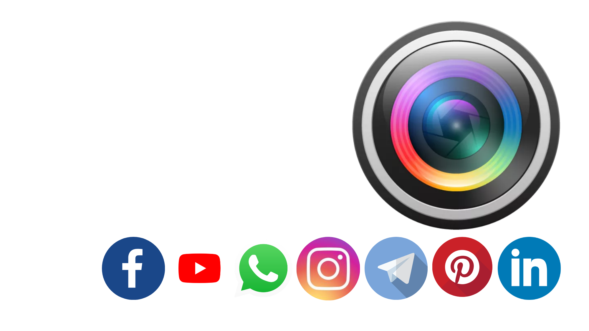
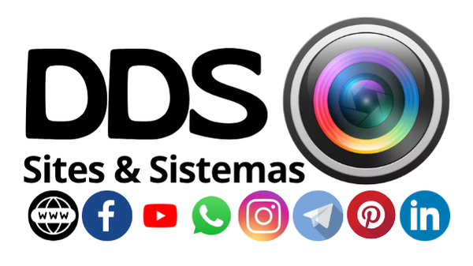

DDS / CRIATIVIDADE EM OUTRA DIMENSÃO
Uma nova
perspectiva.
Criação de site e artes para o seu negócio. Tecnologia para dar vida às suas ideias e simplificar a sua rotina.
Vamos criar algo incrível ↗Conheça minhas soluções ↓
Vamos conversar ↗DDS / CRIATIVIDADE EM OUTRA DIMENSÃO
Criação de site e artes para o seu negócio. Tecnologia para dar vida às suas ideias e simplificar a sua rotina.
Vamos criar algo incrível ↗Conheça minhas soluções ↓01 / SITES & LANDING PAGES
Páginas que apresenta seu valor, funciona no celular e leva a pessoa até o próximo passo.
Quero um site assim ↗02 / SISTEMAS & AUTOMAÇÕES
Transformação de processos complicados em ferramentas feitas por sua rotina.
Vamos simplificar minha rotina ↗03 / DESIGN & CONTEÚDO
Artes para redes sociais, banners, cartões, folders e copy. Sua marca com presença, do papel à tela.
Quero destacar minha marca ↗TECNOLOGIA COM UM TOQUE HUMANO
Meu hobby é encontrar soluções. Vamos descobrir o que posso criar para você?
Coloque sua ideia em foco ↗01 / O QUE EU FAÇO
Do primeiro clique à tarefa que finalmente ficou mais fácil. Vamos encontrar o formato certo para o que você precisa.
Sites e landing pages que apresentam seu negócio com clareza, personalidade e um caminho simples até o contato.
Sistemas e automações pensados para a sua rotina. Organize informações e simplifique tarefas repetitivas.
Artes para cartões, banners, folders e materiais digitais. Sua mensagem com uma apresentação que faz sentido.
Copy, legendas e peças para redes sociais. Conteúdo que traduz o seu valor e convida as pessoas a conversar.
02 / IMAGINE AS POSSIBILIDADES
Alguns exemplos do que dá para criar juntos. Conceitos ilustrativos para inspirar o seu próximo projeto.
Uma visão simples do que importa.
03 / SISTEMAS QUE JÁ CRIEI
Alguns dos sites e sistemas que já desenvolvi e estão em uso. Cada novo projeto entra aqui, sempre em ddsinovacao.com.br.
App gamificado de estudos para estudantes: quizzes e resumos gerados por IA, modos individual, professor e grupo.
PWA de cuidado pastoral: devocionais com IA, escalas de louvor, biblioteca e mensagens entre membros.
Cadastro digital de medidores e verificação de moradores.
Inteligência de renovação de contratos: importação de planilhas, tancagem e dossiê de renovação com IA.
CRM de atendimentos com dashboard, indicadores clicáveis e linha do tempo por cliente.
App de campo que captura número de série e leitura do medidor pela câmera, com extração por IA.
Painel de monitoramento de nível de tanques em bases e clientes, para apresentação a stakeholders.
Plataforma de operações logísticas para gestão de rotas de entrega.
Controle financeiro em sistema, substituindo planilhas manuais.
Site de reservas para espaço de retiro rural, com calendário de disponibilidade em tempo real.
PWA de cuidado pastoral: devocionais com IA, escalas de louvor, diário de leitura e mensagens entre membros.
04 / PRAZER, EU SOU O DIOGO
A tecnologia é como eu faço acontecer.
Gosto de olhar para uma dificuldade e pensar: “como isso poderia ser mais simples?”. É dessa curiosidade que nasce a DDS.
Crio sites, sistemas, artes e conteúdos que aproximam uma ideia da vida real. Cada projeto começa com uma conversa para entender o que você precisa e o que faz sentido para a sua rotina.

05 / DO “TENHO UMA IDEIA” AO “FICOU PRONTO”
Qual é a ideia, o desafio ou aquela tarefa que está tomando seu tempo?
Alinhamos a solução, o escopo, os valores e o prazo antes de começar.
Criação, ajustes combinados e entrega. Você acompanha o projeto de perto.
06 / O PRÓXIMO PASSO É SEU
Me conte um pouco do que você precisa.
A conversa já começa no caminho certo.
Você fala direto comigo.
Sem complicação, de pessoa para pessoa.
ANTES DE COMEÇAR
Claro. Pode chegar com um problema, uma referência ou só uma vontade de melhorar alguma coisa. A conversa ajuda a encontrar um caminho.
Sim. Pode ser uma arte, um banner, uma página ou uma melhoria na sua rotina. O escopo é definido de acordo com a sua necessidade.
Depende do que será criado, da complexidade e dos materiais disponíveis. Depois de entender sua ideia, combinamos valores, entregas e prazo antes de iniciar.
Sim. Podemos conversar e alinhar seu projeto online, com referências e materiais compartilhados durante o processo.